Гид по странице свадебного макияжа
Пошаговый свадебный макияж
Техника создания нежного и стойкого образа невесты
Топ средств для свадебного макияжа
Стойкие текстуры и идеальный тон для важного дня
Премиум-средства для невесты
Безупречный результат и эффект «дорогого» макияжа
Бюджетный набор для свадебного макияжа
Минимальный набор для нежного и стойкого образа
Запишитесь к профессиональному визажисту
Запишитесь на свадебный макияж в Молдове и получите стойкий, нежный и фотогеничный образ невесты.
Что такое свадебный макияж
Свадебный макияж — это особая техника макияжа, направленная на создание нежного, свежего и безупречного образа невесты , который выглядит идеально как вживую, так и на фото.
Такой макияж сочетает в себе естественность, стойкость и лёгкое сияние. Он подчёркивает черты лица, выравнивает тон кожи и делает образ гармоничным, не перегружая его.
Главная особенность — баланс: макияж должен быть достаточно выразительным для камеры, но при этом выглядеть мягко и аккуратно в реальной жизни.
Свадебный макияж идеально подходит для длительных мероприятий, фотосессий и видеосъёмки , так как он сохраняет свежесть и стойкость в течение всего дня.
Почему свадебный макияж выглядит свежим и безупречным
- выравнивает тон кожи и создаёт эффект «идеального лица» без перегрузки
- подчёркивает черты лица мягко, без резких линий и тяжёлых текстур
- добавляет лёгкое сияние, благодаря чему кожа выглядит свежей и здоровой
- обеспечивает стойкость макияжа на весь день и фотосессию
- создаёт гармоничный образ, который красиво смотрится вживую и на фото
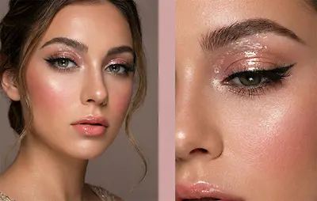
Подготовка кожи для свадебного макияжа
Свадебный макияж должен выглядеть свежо, естественно и безупречно в течение всего дня, поэтому подготовка кожи играет ключевую роль.
Хорошо подготовленная кожа позволяет макияжу ложиться ровно, держаться дольше и выглядеть дорого как в жизни, так и на фотографиях.
- Очищение — мягкое средство для чистой и гладкой кожи
- Увлажнение — крем или сыворотка для эффекта свежести и комфорта
- Праймер — выравнивает текстуру и продлевает стойкость макияжа
- Лёгкое сияние — база с glow-эффектом для «живой» кожи
- Подготовка зоны под глазами — патчи или крем для уменьшения тёмных кругов
Важно дать средствам впитаться перед нанесением макияжа — это обеспечит более ровное покрытие, лучшую стойкость и аккуратный результат без скатывания.
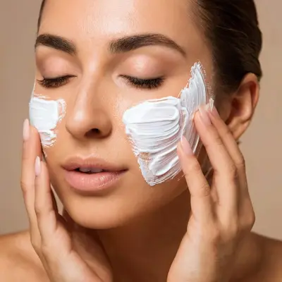
Пошаговый свадебный макияж
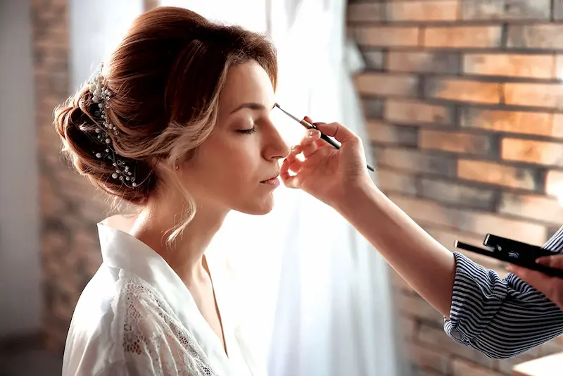

Свадебный макияж строится на естественности, свежести и стойкости , чтобы образ выглядел безупречно как в жизни, так и на фотографиях.
Подготовка кожи
Начните с увлажнения и праймера. Это создаёт ровную базу, благодаря которой макияж держится дольше и выглядит аккуратно.
Тон и коррекция
Используйте лёгкий или средний тон с натуральным финишем. Важно выровнять кожу, сохранив эффект «живого» лица без перегрузки.
Свет и лифтинг
Добавьте лёгкий скульптор и хайлайтер, чтобы подчеркнуть черты лица и создать эффект свежести и визуального лифтинга.
Макияж глаз
Используйте мягкие нейтральные оттенки (бежевые, розовые, коричневые). Лёгкая растушёвка делает взгляд выразительным, но остаётся нежной и элегантной.
Румяна и свежесть
Румяна придают лицу живость и романтичность. Лучше выбирать мягкие розовые или персиковые оттенки.
Губы и фиксация
Завершите образ натуральным оттенком помады или блеска. Закрепите макияж фиксирующим спреем для максимальной стойкости.
Идеальный свадебный макияж — это баланс между естественностью и выразительностью: он подчёркивает красоту, оставаясь лёгким, свежим и гармоничным.
Топ средств для свадебного макияжа
Свадебный макияж требует стойких, фотогеничных и естественно сияющих продуктов: лёгкий тон, деликатный glow и аккуратные акценты, которые выглядят идеально вживую и на фото.
Независимый обзор. Продукты не спонсируются.
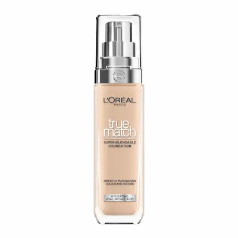
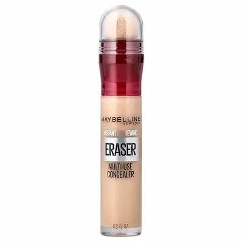
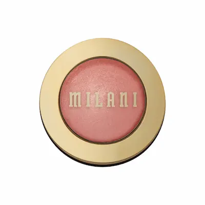
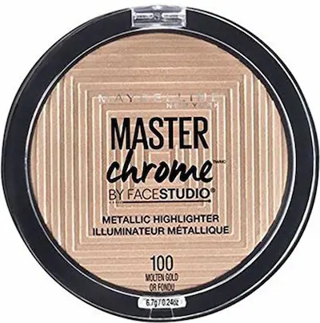
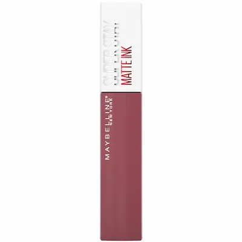
Частые ошибки в свадебном макияже
- слишком плотный тон, создающий эффект «маски»
- отсутствие стойкой базы под макияж
- неправильный подбор оттенка под освещение и фото
- перегруженный макияж глаз и губ одновременно
- игнорирование фиксации макияжа на весь день
Свадебный макияж должен выглядеть естественно, свежо и стойко одновременно. Главная ошибка — перегрузить образ продуктами или выбрать слишком яркие оттенки, которые «спорят» с платьем и общим стилем. Важно сохранить баланс между выразительностью и мягкостью.
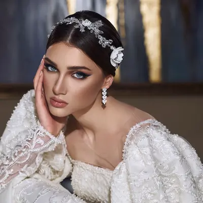
Бюджетный набор для свадебного макияжа (до 500 MDL)
💡 Общая стоимость набора: ~390–500 MDL
Независимый обзор. Продукты не спонсируются.
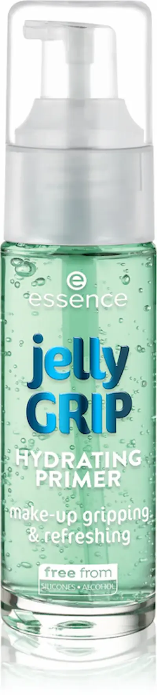
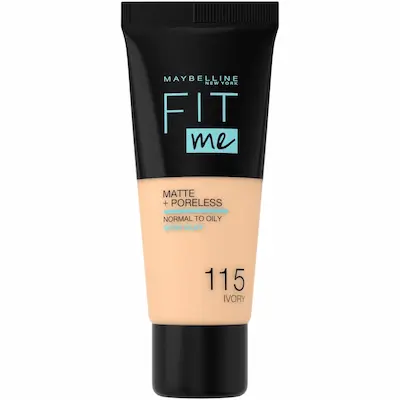
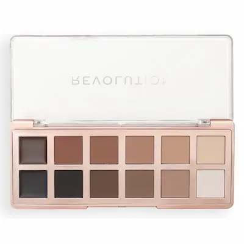
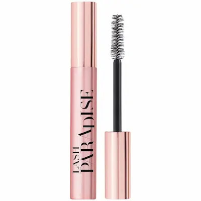
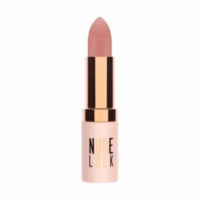
Не уверены, каким должен быть идеальный свадебный макияж?
Свадебный макияж должен быть безупречным: стойким, лёгким и гармоничным. Он должен подчёркивать ваши черты, не перегружая образ, и идеально выглядеть как при дневном, так и при вечернем освещении.
Запишитесь к профессиональному визажисту и получите свадебный образ, который подчеркнёт вашу естественную красоту, будет стойким весь день и идеально смотреться на фото и видео без необходимости коррекции.
Записывайтесь на макияж.
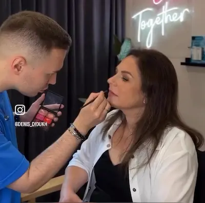
Частые вопросы о свадебном макияже
Что такое свадебный макияж?
Свадебный макияж — это профессиональный макияж, созданный для стойкости, естественности и идеального внешнего вида на фото и видео в течение всего дня.
Чем свадебный макияж отличается от вечернего?
Он более лёгкий, мягкий и гармоничный. Акцент делается на естественной красоте, а не на ярких или драматичных элементах.
Сколько держится свадебный макияж?
При правильной технике и косметике он держится 12–18 часов без потери качества и свежести.
Можно ли сделать натуральный свадебный макияж?
Да, это один из самых популярных вариантов. Он подчёркивает черты лица и создаёт эффект «идеальной кожи».
Нужно ли делать пробный макияж?
Да, пробный макияж помогает подобрать идеальный образ, проверить стойкость и убедиться, что результат соответствует ожиданиям.
Как подготовить кожу перед свадебным макияжем?
Важно хорошо увлажнить кожу, использовать мягкий уход и избегать новых агрессивных процедур за несколько дней до свадьбы.